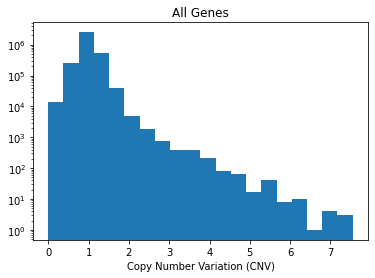

Copy Number Variation (CNV)
Gene-level copy number data that is log2 transformed with a pseudo-count of 1; log2(CN ratio + 1).
Genes:25368
Cell Lines:1754
Primary Diseases:35
Lineages:38
Source: Broad Institute
DepMap readme.
Reactome FI coverage
# cnv genes: 24004
# FI genes: 13609
# CNV,FI genes that overlap: 13407 [98.5%]
Cell line coverage
There are 132 cell lines with DepMap_ID -> cell_iname mappings that also have coverage in i) Lincs ii) CCLE expr and iii) CCLE mutation.
NOTE: Previous CCLE & Lincs cell line overlap was 133 but cell line (cell_iname) HCC1588 is not in the CNV dataset.
Fortunately, HCC1588 only has 308 observations in LINCS (after QC), and therefore we feel comfortable dropping this line from our analysis.
To see this list of overlapping lines, refer to:
gnnCDR/gnn_cdr/depmap/eda/lincs_expr_mut_cnv_cell_inames.txt
Missing CNV values
There are a small subset (~0.001%) of NA values in this dataset. NA elements are assigned a value of 1.
CNV historgam

Pre-processing CNV data
Genes in the reactome FI network that are not in the CNV dataset are assigned a value of 1.
All CNV values are then scaled between 0-1.
Implementation
To load the data:
cnv = gnn_cdr.depmap.load_ccle_cnv(verbose=True)
output:
# of genes lost in XXX -> ensembl mapping (columns): 1420
# of cell lines lost cin DepMap_ID -> cell_iname mapping (rows): 1618
[Final] Number of genes: 24004
[Final] Number of cell lines: 136
To get an individual cell lines CNV data:
max_cnv_val = cnv[cnv.columns[1:]].values.ravel().max()
x = gnn_cdr.depmap.get_cell_line_ccle_cnv(cnv, cell_line='HEPG2', genelist=nodelist_fi, max_cnv_val=max_cnv_val)
x.shape
output:
(13639,)